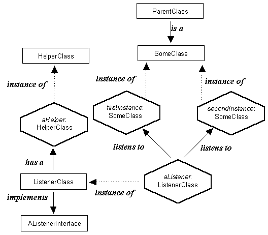

Instance Diagrams

An instance diagram shows, in hexagonal boxes, the actual instances of classes which are required for a particular artefact. It also shows the roles they play and the relationships between them. The class hierarchy relationships of the classes can also be shown.